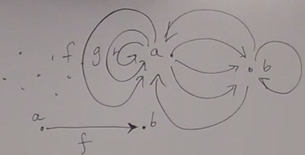
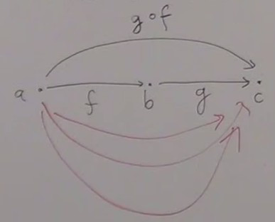
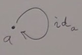
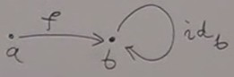
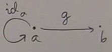
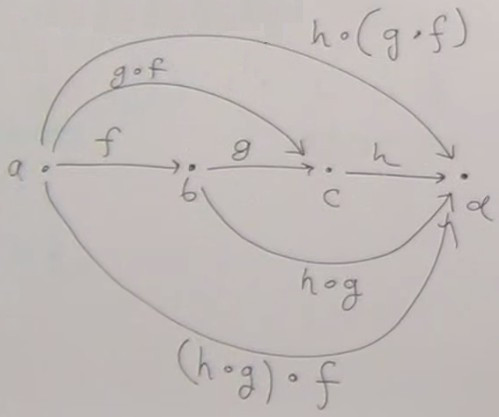

The major tools we have at our disposition are :
- Abstraction : forget about unecessary details so that things that appear different may look identical.
- Composition
- Identity : because of abstraction, this notion is not trivial ; some things are strictly identical, and some are identical for certain purposes. In mathematics, homotopy type theory is based on distinguishing between what is identical from what is not. Things that are almost equal are called isomorphic.
A category is a bunch of objects. We don't use the term set because it has a precise mathematical meaning, and some categories are not a set of objects. Some things are bigger than sets.
If the objects form a set, then the category is called small ; if they don't form a set then it's a large category.
The arrows form a set (categories where the arrows don't form a set but are objects of a category are called higher-order categories).
So a category is a bunch of objects and arrows (or morphisms) between objects.
An object is a primitive in this theory ; it has no properties, no internal structure.
A morphism is also a primitive, it has no properties, except that an arrow has a beginning and end.
Objects serve only to identify the ends of arrows.
Notice how this is related to human perception. Hunters were using arrows ! We are used to localize things in space. Arrows express the notion of movement, they are related to social relations between individuals. This language constrains us.
When we define a category, we specify what the objects are, and for each pair of objects what are the arrows between them.
There may be from zero to an infinity of arrows between two objects. So it's OK to talk of a category as a graph if we admit that there can be an infinity of nodes and an infinity of edges.  There may be arrows going from
a to b, and from b to a, and from a to a.
There may be many different arrows going from
a to a.
Properties
Composition
A property expresses composition :
If there is an arrow
and an arrow
then there must exist an arrow from
that is identical to the composition of
This arrow is written g o f, and called g after f.
f from a to b
and an arrow
g from b to c,
then there must exist an arrow from
a to c
that is identical to the composition of
f and g.
There might be multiple arrows going from
a to c, but g o f is the composition of f and g.

For evey pair of composable arrows, their composition must exist.
Composable means that the end of one is the beginning of the other.
Here we see the importance of the objects to identify the end and the beginning of the arrows.
So composition is part of the definition of the category ; it must include the definition of composition for every composable pair of arrows, like a big multiplication table.
Identity
An other property expresses identity : for every objecta, there must exist an arrow going from a to a, called ida.

It is an identity in the sense of composition : if we have an arrow f from a to b then we must have :

and
idb o f = f (left identity)

g o ida = g (right identity)
Associativity
If we have- an arrow
ffromatob, - an arrow
gfrombtoc, - an arrow
hfromctod,
h o (g o f) = (h o g) o f
So we can just omit parentheses.

Some theories were deveoped where associativity is weak (both terms of the associativity equation are not identical but only isomorphic).
The Set category
Objects are types, and arrows are functions.
A function is an arrow between two types.
Any single-argument function takes an argument of type
a and returns a result of type b.
In this sense an function is an arrow between two types.
The simplist model for types is that they are just sets of values.
So we can model programming as a category of sets ; functions are just mathematical functions, defined between sets.
A lot of categories come from some model.
For example you take set theory and represent the sets as objects in a category ; this category is called
Set.
We have sets that have a structure that we know, they have elements.
When we build the
Set category, we forget the structure of the sets, they are just objects, without structure.
We also know the functions between the sets. In the Set category, each function becomes an arrow.
Arrows in a category are also atomic, without structure. We forget the knowledge we have about these functions.
This defines a category because functions can be composed, this composition is associative, and we can define an identity function for each set : the function which associates each element of a set to itself.
So we forget about the structures of the sets and the functions, we just have these morphisms. And using only this, we can say a lot of things about the objects. For example, we can know that a set is empty, that it has only one element.
This gives a completely new way of looking at things, more abstract.
If you think about what's inside the sets, how the elements are mapped, this is assembly language, plumbery. With categories, you don't look inside, you just look at how they are connected.
This achieves the ultimate in data hiding : you have a data type shrunk to a point, and you only know its interface, how it connects to other objects.